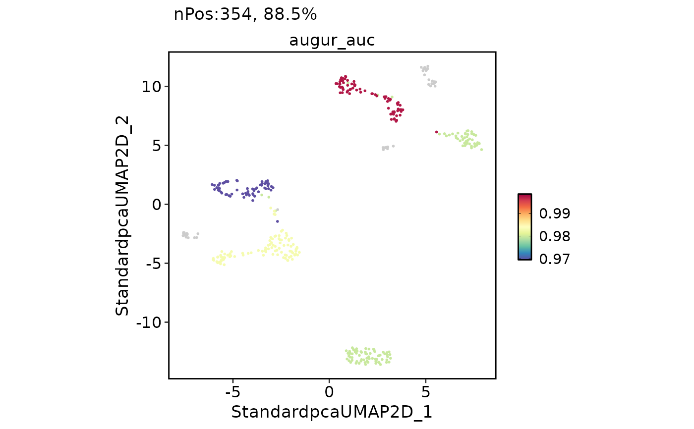

Prioritize perturbed cell types using Augur
Usage
RunAugur(
object,
celltype.by,
label.by,
assay = NULL,
layer = "counts",
backend = c("cpp", "r"),
features = NULL,
n_subsamples = 50,
subsample_size = 20,
folds = 3,
min_cells = NULL,
var_quantile = 0.5,
feature_perc = 0.5,
cores = 1,
select_var = TRUE,
augur_mode = c("default", "velocity", "permute"),
classifier = c("rf", "lr"),
rf_params = list(trees = 100, mtry = 2, min_n = NULL, importance = "accuracy"),
lr_params = list(mixture = 1, penalty = "auto"),
prefix = "augur",
tool_name = "Augur",
add_meta = TRUE,
verbose = TRUE,
...,
srt = NULL
)Arguments
- object
A
Seuratobject.- celltype.by
Metadata column or vector defining the cell types used by Augur.
- label.by
Metadata column or vector defining the labels to predict, such as condition, stimulation, sample type, or technology.
- assay
Assay used to extract the feature matrix. If
NULL, the default assay is used.- layer
Assay layer used as the feature matrix.
- backend
Backend used to run Augur.
"cpp"uses a parity-preservingscopR/C++ backend that keeps Augur's feature selection, sampling, random forest, and metric semantics without requiring the Augur package."r"calls the nativeAugur::calculate_aucimplementation.- features
Features used by Augur. If
NULL, all features inassayare used.- n_subsamples, subsample_size, folds, min_cells, var_quantile, feature_perc, select_var, augur_mode, classifier, rf_params, lr_params
Arguments passed to
Augur::calculate_auc.- cores
Number of cores used by Augur.
- prefix
Prefix for metadata columns written to
srt@meta.data.- tool_name
Name of the
srt@toolsentry used to store Augur results.- add_meta
Whether to write
prefix_aucandprefix_rankmetadata columns back to each cell by matchingcelltype.by.- verbose
Whether to print the message. Default is
TRUE.- ...
Additional arguments passed to
Augur::calculate_auc.- srt
Deprecated alias for
object; supply exactly one of the two. It will be removed in scop 1.0.0.
Value
A Seurat object with native Augur results stored in
srt@tools[[tool_name]]. When add_meta = TRUE, cell-level metadata columns
prefix_auc and prefix_rank are added for use with existing scop
plotting functions such as FeatureDimPlot().
References
Skinnider, M.A., Squair, J.W., Kathe, C., et al. (2021). Cell type prioritization in single-cell data. Nature Biotechnology, 39, 30-34. doi:10.1038/s41587-020-0605-1
Examples
Restored example output generated on 2026-10-13 from SCOP 53ed7e08f. These historical examples have not been revalidated against the current release. Current usage and arguments are documented above.
data(panc8_sub)
panc8_sub <- subset(panc8_sub, subset = tech %in% c("celseq", "celseq2"))
panc8_sub <- RunStandardWorkflow(panc8_sub, verbose = FALSE)
#> ℹ [2026-10-13 16:39:38] Skip `log1p()` because `layer = data` is not "counts"
panc8_sub <- RunAugur(
panc8_sub,
celltype.by = "celltype",
label.by = "tech",
n_subsamples = 5,
subsample_size = 20,
min_cells = 20,
cores = 1,
verbose = FALSE,
rf_params = list(
trees = 20,
mtry = 2,
min_n = NULL,
importance = "accuracy"
)
)
#> Registered S3 method overwritten by 'yardstick':
#> method from
#> print.metric spatstat.geom
#> ! [2026-10-13 16:39:48] Skipping cell type [1] delta
#> ! 9 Levels: acinar activated-stellate alpha beta delta ductal ... macrophage: minimum number of cells ([1] 11) is less than [1] 20
#> ! [2026-10-13 16:39:58] Skipping cell type [1] activated-stellate
#> ! 9 Levels: acinar activated-stellate alpha beta delta ductal ... macrophage: minimum number of cells ([1] 4) is less than [1] 20
#> ! [2026-10-13 16:39:58] Skipping cell type [1] gamma
#> ! 9 Levels: acinar activated-stellate alpha beta delta ductal ... macrophage: minimum number of cells ([1] 2) is less than [1] 20
#> ! [2026-10-13 16:39:58] Skipping cell type [1] macrophage
#> ! 9 Levels: acinar activated-stellate alpha beta delta ductal ... macrophage: minimum number of cells ([1] 0) is less than [1] 20
#> ! [2026-10-13 16:39:58] Skipping cell type [1] endothelial
#> ! 9 Levels: acinar activated-stellate alpha beta delta ductal ... macrophage: minimum number of cells ([1] 0) is less than [1] 20
panc8_sub@tools$Augur$AUC
#> # A tibble: 4 × 2
#> cell_type auc
#> <fct> <dbl>
#> 1 beta 0.997
#> 2 ductal 0.983
#> 3 alpha 0.980
#> 4 acinar 0.970
FeatureDimPlot(
panc8_sub,
features = "augur_auc",
reduction = "StandardUMAP2D",
bg_cutoff = -Inf
)
